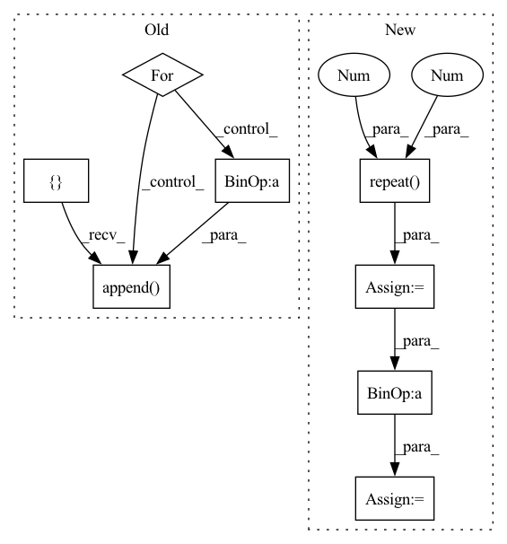

Pattern ID :20987

Before Change
torch.tensor: CE Loss
batch_size, seq_len, vocab_size = logits.size()
mask_positions_after_reshaped = []
for batch, mask_pos in enumerate(mask_positions.detach().cpu().numpy().tolist()):
for pos in mask_pos:
mask_positions_after_reshaped.append(batch * seq_len + pos)
logits = logits.reshape(batch_size * seq_len, -1) // (batch_size * seq_len, vocab_size)
mask_logits = logits[mask_positions_after_reshaped] // (batch * label_num, vocab_size)
mask_labels = mask_labels.reshape(-1, 1).squeeze() // (batch * label_num)
After Change
loss = None
for single_logits, single_sub_mask_labels, single_mask_positions in zip(logits, sub_mask_labels, mask_positions):
single_mask_logits = single_logits[single_mask_positions] // (mask_label_num, vocab_size)
single_mask_logits = single_mask_logits.repeat(len(single_sub_mask_labels), 1, 1) // (sub_label_num, mask_label_num, vocab_size)
single_mask_logits = single_mask_logits.reshape(-1, vocab_size) // (sub_label_num * mask_label_num, vocab_size)
single_sub_mask_labels = torch.LongTensor(single_sub_mask_labels).to(device) // (sub_label_num, mask_label_num)
single_sub_mask_labels = single_sub_mask_labels.reshape(-1, 1).squeeze() // (sub_label_num * mask_label_num)
cur_loss = cross_entropy_criterion(single_mask_logits, single_sub_mask_labels)
cur_loss = cur_loss / len(single_sub_mask_labels)
if not loss:
loss = cur_loss
else:
loss += cur_loss
loss = loss / batch_size // (1,)
In pattern: SUPERPATTERN
Frequency: 3
Non-data size: 8
Instances
Fragment ID: 67561158
Project Name: harderthenharder/transformers_tasks
Commit Name: bf825bb22c43795f1e3a08cf8969ddc613051e76
Time: 2022-11-30
Author: pankeyu@pankeyus-MacBook-Pro.local
File Name: prompt_tasks/p-tuning/utils.py
M Class Name: AnonimousClass
N Class Name: AnonimousClass
M Method Name: mlm_loss(6)
N Method Name: mlm_loss(6)
M Parent Class:
N Parent Class:
M File Name: prompt_tasks/p-tuning/utils.py
N File Name: prompt_tasks/p-tuning/utils.py
M Start Line: 204
M End Line: 212
N Start Line: 190
N End Line: 203
'>
Before Change
torch.tensor: CE Loss
batch_size, seq_len, vocab_size = logits.size()
mask_positions_after_reshaped = []
for batch, mask_pos in enumerate(mask_positions.detach().cpu().numpy().tolist()):
for pos in mask_pos:
mask_positions_after_reshaped.append(batch * seq_len + pos)
logits = logits.reshape(batch_size * seq_len, -1) // (batch_size * seq_len, vocab_size)
mask_logits = logits[mask_positions_after_reshaped] // (batch * label_num, vocab_size)
mask_labels = mask_labels.reshape(-1, 1).squeeze() // (batch * label_num)
After Change
loss = None
for single_logits, single_sub_mask_labels, single_mask_positions in zip(logits, sub_mask_labels, mask_positions):
single_mask_logits = single_logits[single_mask_positions] // (mask_label_num, vocab_size)
single_mask_logits = single_mask_logits.repeat(len(single_sub_mask_labels), 1, 1) // (sub_label_num, mask_label_num, vocab_size)
single_mask_logits = single_mask_logits.reshape(-1, vocab_size) // (sub_label_num * mask_label_num, vocab_size)
single_sub_mask_labels = torch.LongTensor(single_sub_mask_labels).to(device) // (sub_label_num, mask_label_num)
single_sub_mask_labels = single_sub_mask_labels.reshape(-1, 1).squeeze() // (sub_label_num * mask_label_num)
cur_loss = cross_entropy_criterion(single_mask_logits, single_sub_mask_labels)
cur_loss = cur_loss / len(single_sub_mask_labels)
if not loss:
loss = cur_loss
else:
loss += cur_loss
loss = loss / batch_size // (1,)
'>
Fragment ID: 67561159
Project Name: harderthenharder/transformers_tasks
Commit Name: bf825bb22c43795f1e3a08cf8969ddc613051e76
Time: 2022-11-30
Author: pankeyu@pankeyus-MacBook-Pro.local
File Name: prompt_tasks/p-tuning/utils.py
M Class Name: AnonimousClass
N Class Name: AnonimousClass
M Method Name: mlm_loss(6)
N Method Name: mlm_loss(6)
M Parent Class:
N Parent Class:
M File Name: prompt_tasks/p-tuning/utils.py
N File Name: prompt_tasks/p-tuning/utils.py
M Start Line: 204
M End Line: 212
N Start Line: 190
N End Line: 203
'>
Before Change
n_samples, horizon, n_assets = simple_returns.shape
res = []
for i in range(n_samples):
res.append(simple_returns[i] @ weights[i]) // (horizon, n_assets)x(n_assets)=(horizon,)
out = torch.stack(res, dim=0)
After Change
n_samples, horizon, n_assets = simple_returns.shape
weights_ = weights.view(n_samples, 1, n_assets).repeat(1, horizon, 1) // (n_samples, horizon, n_assets)
if not rebalance:
weights_unscaled = (1 + simple_returns).cumprod(1)[:, :-1, :] * weights_[:, 1:, :]
weights_[:, 1:, :] = weights_unscaled / weights_unscaled.sum(2, keepdim=True)
out = (simple_returns * weights_).sum(-1)
'>
Fragment ID: 67561156
Project Name: jankrepl/deepdow
Commit Name: f641c531de3bbae674357327fc5dfa6335164d94
Time: 2020-05-01
Author: jankrepl@yahoo.com
File Name: deepdow/losses.py
M Class Name: AnonimousClass
N Class Name: AnonimousClass
M Method Name: portfolio_returns(5)
N Method Name: portfolio_returns(4)
M Parent Class:
N Parent Class:
M File Name: deepdow/losses.py
N File Name: deepdow/losses.py
M Start Line: 82
M End Line: 87
N Start Line: 48
N End Line: 92
'>
Before Change
x = q + self.num_q * r
Mvt = self.Mv.unsqueeze(0)
p = []
Mv = []
for qt, xt in zip(q.permute(1, 0), x.permute(1, 0)):
kt = self.k_emb_layer(qt)
vt = self.v_emb_layer(xt)
wt = torch.softmax(torch.matmul(kt, self.Mk), dim=-1)
// Read Process
rt = (wt.unsqueeze(-1) * Mvt).sum(1)
ft = torch.tanh(self.f_layer(torch.cat([rt, kt], dim=-1)))
pt = torch.sigmoid(self.p_layer(ft)).squeeze()
// Write Process
et = torch.sigmoid(self.e_layer(vt))
Mvt = Mvt * (1 - (wt.unsqueeze(-1) * et.unsqueeze(1)))
at = torch.tanh(self.a_layer(vt))
Mvt = Mvt + (wt.unsqueeze(-1) * at.unsqueeze(1))
p.append(pt)
Mv.append(Mvt)
p = torch.stack(p, dim=1)
Mv = torch.stack(Mv, dim=1)
After Change
x = q + self.num_q * r
batch_size = x.shape[0]
Mvt = self.Mv0.unsqueeze(0).repeat(batch_size, 1, 1)
Mv = [Mvt]
k = self.k_emb_layer(q)
v = self.v_emb_layer(x)
w = torch.softmax(torch.matmul(k, self.Mk.T), dim=-1)
// Write Process
e = torch.sigmoid(self.e_layer(v))
a = torch.tanh(self.a_layer(v))
for et, at, wt in zip(
e.permute(1, 0, 2), a.permute(1, 0, 2), w.permute(1, 0, 2)
):
Mvt = Mvt * (1 - (wt.unsqueeze(-1) * et.unsqueeze(1))) + \
(wt.unsqueeze(-1) * at.unsqueeze(1))
Mv.append(Mvt)
Mv = torch.stack(Mv, dim=1)
// Read Process
f = torch.tanh(
self.f_layer(
torch.cat(
[
(w.unsqueeze(-1) * Mv[:, :-1]).sum(-2),
k
],
dim=-1
'>
Fragment ID: 67561171
Project Name: hcnoh/knowledge-tracing-collection-pytorch
Commit Name: c42b01b83dbe54e94f4294009fbfe8bd910e3638
Time: 2021-10-06
Author: rhc0624@gmail.com
File Name: models/dkvmn.py
M Class Name: DKVMN
N Class Name: DKVMN
M Method Name: forward(3)
N Method Name: forward(3)
M Parent Class: Module
N Parent Class: Module
M File Name: models/dkvmn.py
N File Name: models/dkvmn.py
M Start Line: 40
M End Line: 66
N Start Line: 50
N End Line: 87